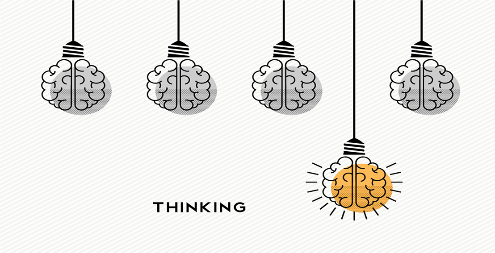

Creativity
Opportunities to use my creative mind and come up with interesting ideas
It cliché to say that I have always wanted to become a Web Developer but in my case, it is true! During my teens I attempted to learn C++ and Assembly language to help me with my hardcore gaming :) Unfortunately I found it way to difficult because I was not that well equipped with a good level of educational background. Years later I discovered that I can understand the basic concepts and can apply logical thinking to problems with code. Applying to this year's Founders and Coder intake has pushed me further than I expected and I hope I can continue to keep learning and apply this knowledge. Having attended the weekly coding meetups and through talking to FAC alumni I feel this course is best suited to me to continue my journey. I particularly like how students teach themselves in a warm environment with like-minded people that value working in teams
I graduated from UCL studying the Information Management for Business in 2016 and during that same year I started out as an IT Consultant for an adviosry company. I knew it was not the right career for me when I first started so I began my developer learning then and have used my spare time to upskill myself. Through online courses and textbooks, I have learn't HTML/CSS/Javascript/React. I have come to realise that by working hard I can turn a hobby into a career that I want to do
I train with the London Legions Hockey team on Monday & Thursday nights at Alexander Palace and Wednesdays at Sobel Leisure Centre. This is a video of me in a scrimmage back in April 2018